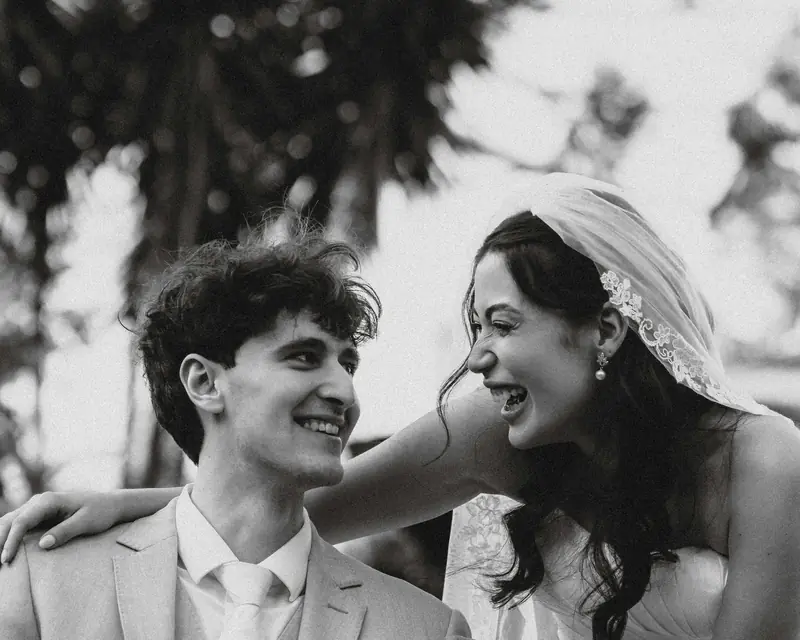

Wedding & editorial photographer
Your day.
Beautifully real.
Honest moments. A considered eye.
Wedding photography with feeling, across
the Lake District, UK and Europe.


The feeling.
The whole story.
Editorial eye.
Documentary heart.
Calm direction
Space to feel like yourselves.
Honest storytelling
The small moments belong, too.
A personal experience
From first hello to final gallery.
01 / Selected stories
A feeling, held in a frame.


02 / The experience
Be in the moment.
I’ll take care of the memories.
You deserve to enjoy your wedding. A little planning, a little guidance, and plenty of room for the day to unfold in its own way.
Before the day
We talk through what matters and build a relaxed photography plan around it.
In the moment
Useful direction when you need it. An unobtrusive presence when you don’t.
For the years ahead
A thoughtful, complete story, ready to revisit, print and share.
03 / Field notes
A little inspiration.
A few useful things.
Something worth remembering
Let’s start with your date.
A place, a date, a little about the two of you.